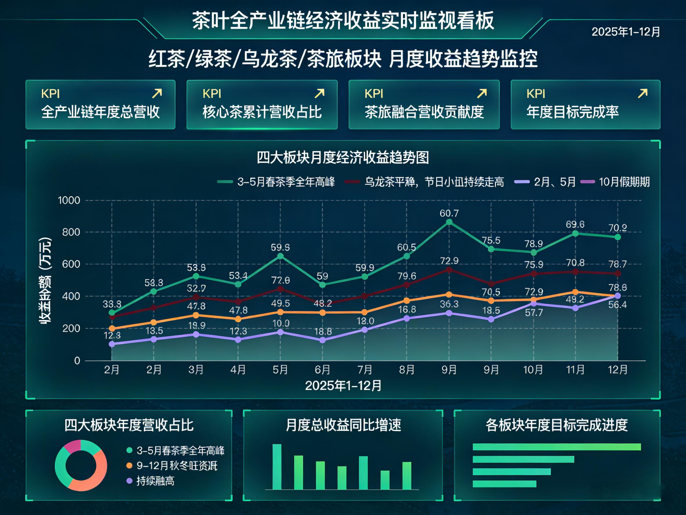

监管总览 · 协同支撑 · 数据回传
政府端
围绕监管、协同、服务和推广，形成产业运行可视化与数据支撑体系。
监管总览
186
农事记录总数
28
接入茶园点位
12
活跃茶企
97%
数据回传率
运行状态
茶园生态数据回传
空气、土壤、水质、虫口监测等基础数据持续上传
正常
空气、土壤、水质、虫口监测等基础数据持续上传
农事记录规范性检查
支持检查茶农记录完整性，提升台账管理效率
待抽检
支持检查茶农记录完整性，提升台账管理效率
溯源体系接入情况
支持批次追踪、生态数据展示、制茶信息归集
已接入
支持批次追踪、生态数据展示、制茶信息归集
茶企活动备案
品牌活动、品鉴会、茶旅活动统一登记
处理中
品牌活动、品鉴会、茶旅活动统一登记

协同支撑体系
校
高校支撑
开展平台开发、功能优化、数据接口升级。
开展平台开发、功能优化、数据接口升级。
研
农科支撑
提供种植指导、质量提升、技术咨询与培训服务。
提供种植指导、质量提升、技术咨询与培训服务。
政
政策支撑
推动开发、组织培训、统筹推广、引导规范使用。
推动开发、组织培训、统筹推广、引导规范使用。
企
产业共建
茶企共同参与内容运营、活动落地、品牌推广。
茶企共同参与内容运营、活动落地、品牌推广。
阶段成效
效
消费体验升级
增强年轻客群互动意愿，提升信任与转化。
增强年轻客群互动意愿，提升信任与转化。
提
生产效率提升
优化茶农记录方式，增强数据回传与管理效率。
优化茶农记录方式，增强数据回传与管理效率。
优
运营结构优化
帮助茶企实现产销匹配、品牌传播和活动转化。
帮助茶企实现产销匹配、品牌传播和活动转化。
促
产业协同增强
推动种植、生产、销售、体验全链联动。
推动种植、生产、销售、体验全链联动。